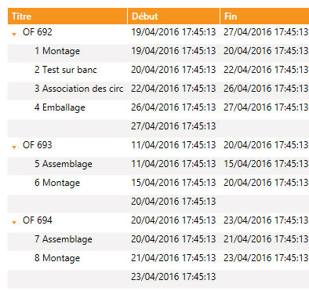

Sur la droite de l'objet Gantt, il y a la possibilité d'afficher, ou non, des colonnes.
Les colonnes représentent forcément des champs de l'enregistrement ObjectTask. Pour ajouter une colonne, utiliser la fonction XmeGanttAddColumn. Si aucune colonne n'est ajoutée, ce tableau n'est pas affiché.
Colonne de type "arbre"
Dans l'exemple ci-dessous, la colonne "Titre" est arborescente. C'est lors de l'ajout via la fonction XmeGanttAddColumn que l'on peut préciser cela.

Attention : il existe une grosse différence entre le client léger WPF et HTML5
En HTML5, seule la colonne "Titre" est arborescente, et ce n'est pas contrôlé via la création de la colonne. C'est automatique à partir du moment où des enfants ont été ajoutés à une tâche via la fonction XmeGanttAddChild.
Voir l'exemple de programmation complet.